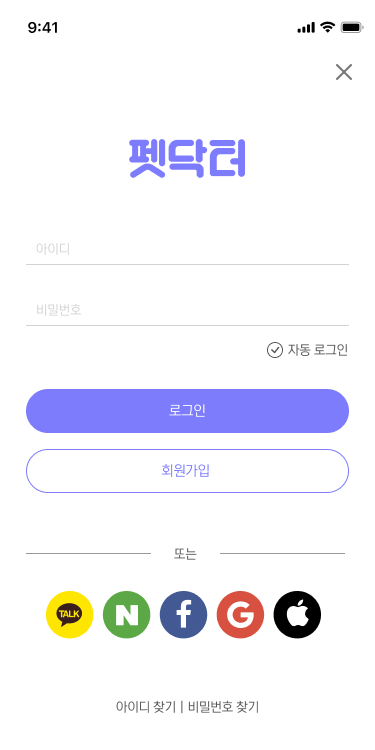

펫닥터 모바일 웹
UI 디자인
펫닥터는 반려동물을 진짜 가족처럼 생각하고 케어하는 펫팸족(Pet+Family)을 타깃으로 한 펫케어 서비스로, 모바일로 간편하게 반려동물의 건강을 기록 및 관리하고, 전문 의료진과 1:1로 소통할 수 있는 서비스를 제공합니다.
Font
- #333333
- #777777
- #999999
Color
- #AAA9FC
- #E6E6FB
- #7D7CFD
고급스러운 보라색 계열의 컬러를 사용하여 서비스에 대한 전문성과 신뢰감을 주는 이미지를 줄 수 있도록 디자인했습니다.
Pre Loading
화면 클릭시 또는 3초 후 Home 화면으로 이동합니다.
Sign In
아이디 로그인 또는 소셜 로그인을 통한 간편 로그인이 가능합니다.
Sign Up
기본 정보를 입력하여 손쉽게 회원가입을 할 수 있습니다. 휴대폰 인증번호와 약관 동의 여부를 체크합니다.
Pet Note
펫의 기본 정보를 기록하고 진료정보를 조회할 수 있습니다.
Pet Register
새로운 펫의 사진과 기본 정보를 등록할 수 있습니다.
Alarm
알림 내용을 확인하고 확인한 목록을 삭제할 수 있습니다.
Home
내 정보, 알람, 자주 찾는 메뉴에 쉽게 접근할 수 있고, 슬라이드 배너를 통해 이벤트 정보를 접할 수 있습니다.

Doctor Talk
닥터톡 Q&A를 카테고리 별로 탭메뉴로 확인하고, 궁금한 내용을 검색할 수 있습니다.
Doctor Talk Detail
닥터톡의 질문과 답변 목록을 볼 수 있고, 답변에 대한 좋아요와 공유를 할 수 있습니다. 채택된 답변은 최상단에 고정됩니다.
My Page
개인 프로필, 나의 관심 및 Q&A 등을 관리할 수 있습니다.